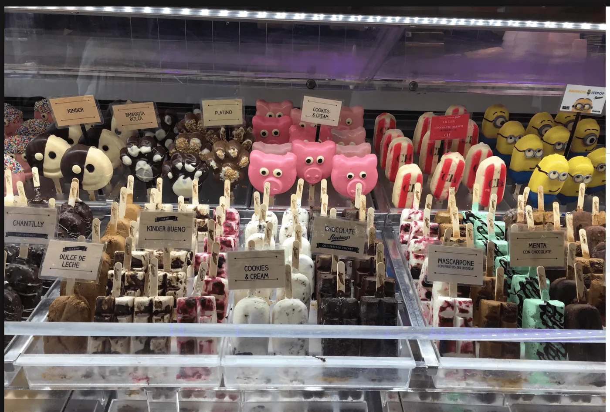
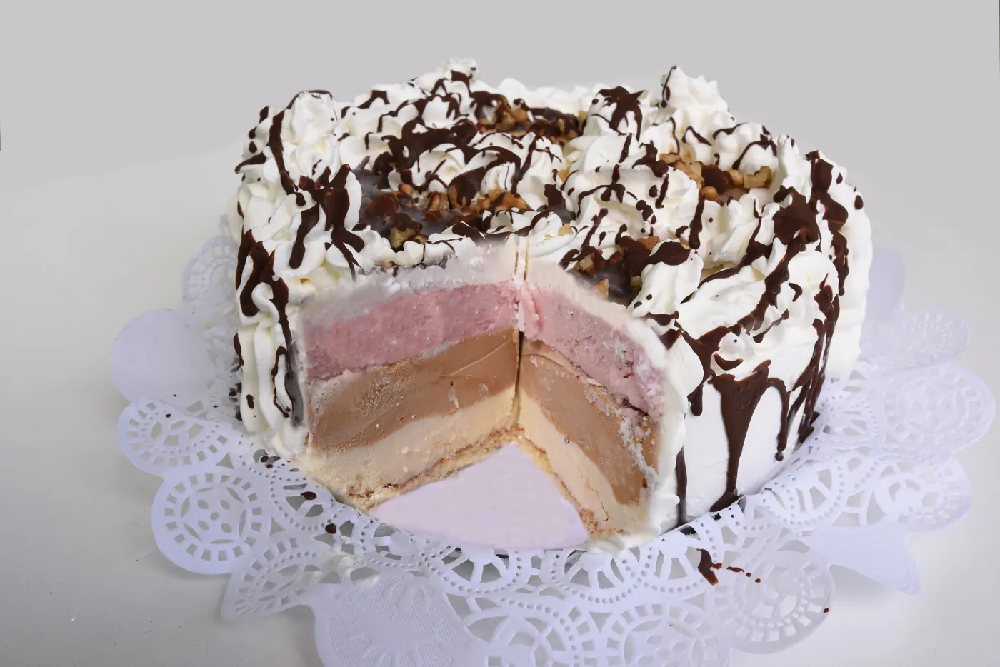
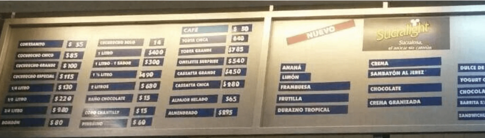

★★★★★
“La mejor heladería que probé en mi vida. El dulce de leche es cremoso, intenso y artesanal de verdad.”

Valentina R.
Todos los días, en la esquina más helada de Pocitos
Desde 1934, Los Trovadores endulza los momentos de miles de familias uruguayas con helado artesanal elaborado con pasión y los mejores ingredientes.
Un clásico de siempre o una creación nueva: cada visita es una invitación a crear recuerdos. Tradición, calidad y el gusto de compartir, en cada helado.




Clásicos de siempre, línea sin azúcar agregada y propuestas para compartir. Consultá disponibilidad y recomendaciones en el local.
El puntaje y el total de reseñas se sincronizan con Google.
“La mejor heladería que probé en mi vida. El dulce de leche es cremoso, intenso y artesanal de verdad.”
“Un clásico de Pocitos desde 1934. La atención es cálida y el pistacho, espectacular.”

“Hay una gran variedad de sabores sin azúcar y todos son riquísimos. Una propuesta difícil de encontrar.”

“Contratamos el servicio para un cumpleaños y fue el éxito de la fiesta. Puntuales y con el helado impecable.”

“Fuimos en familia y cada uno encontró su sabor. La frutilla y el chocolate fueron nuestros favoritos.”

“Excelente atención y muy buena calidad. Se nota la tradición en cada gusto; siempre volvemos.”